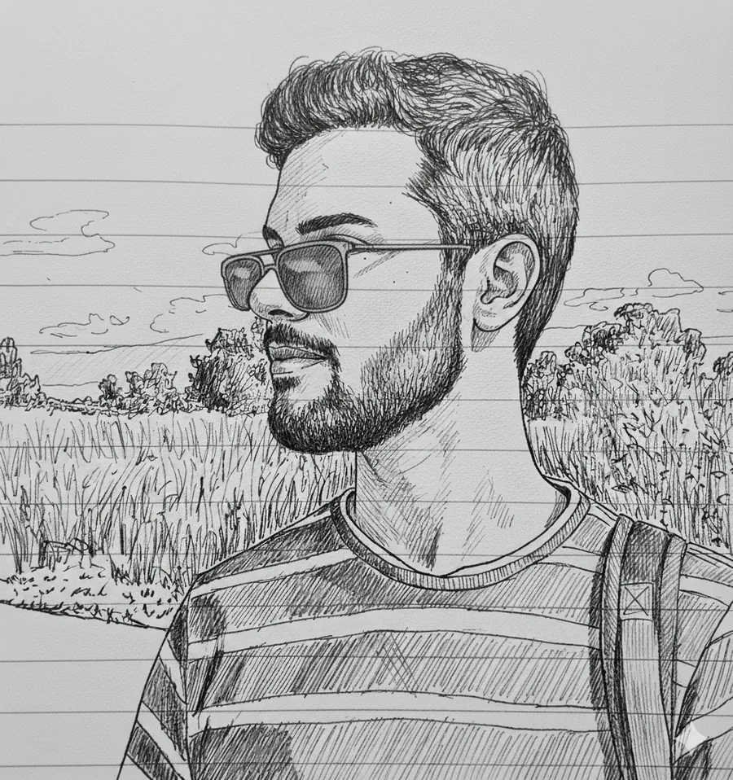
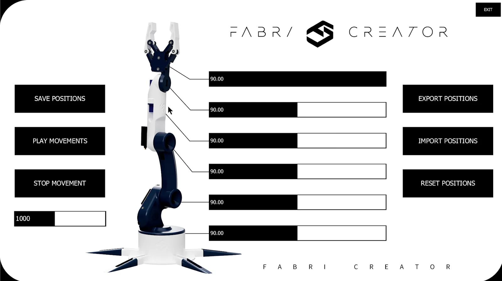
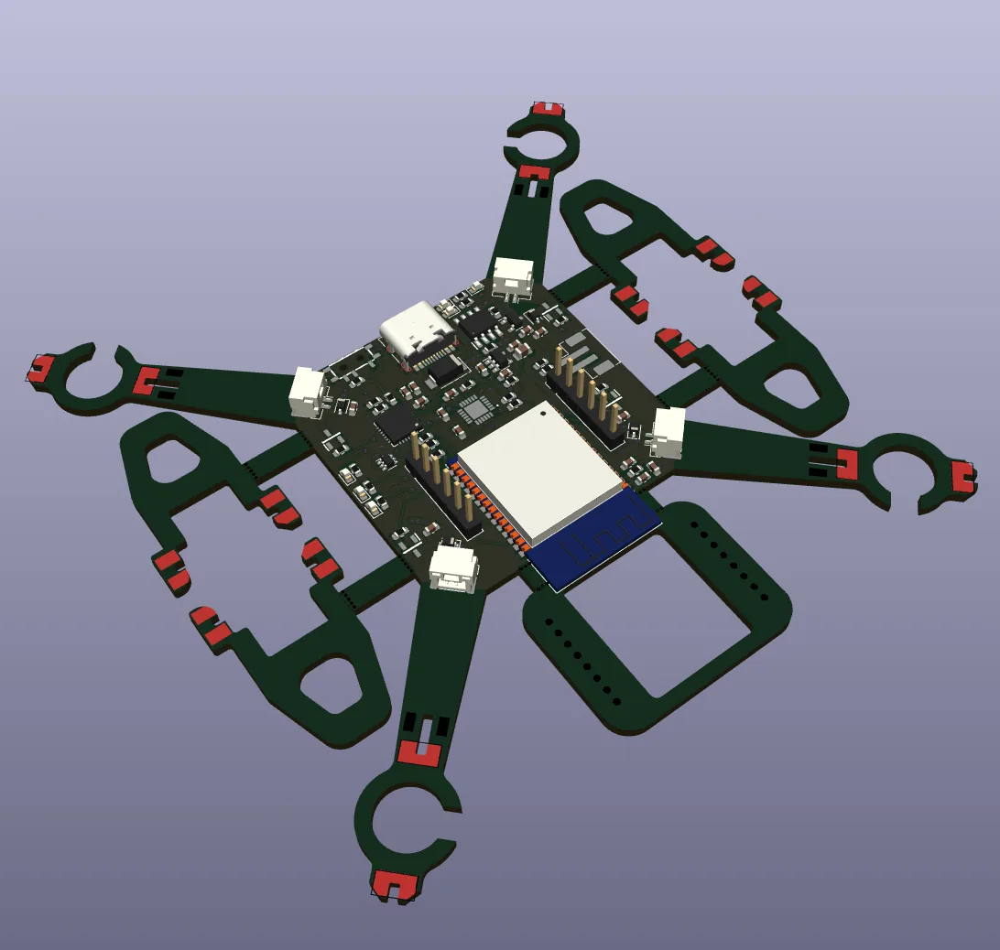
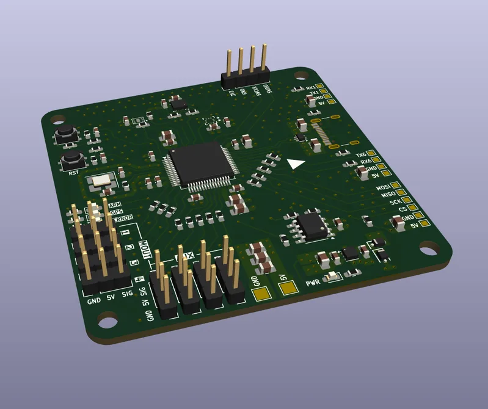
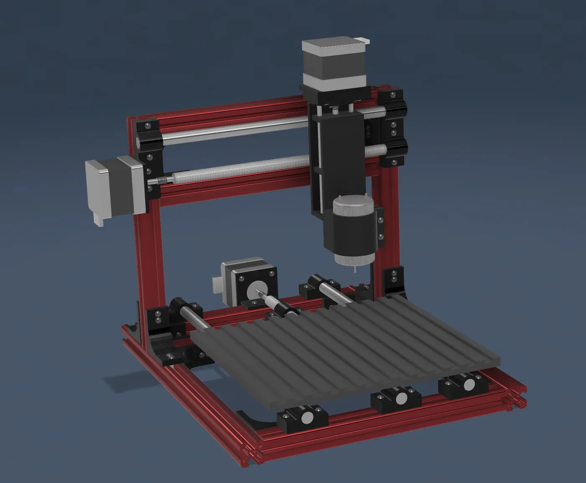
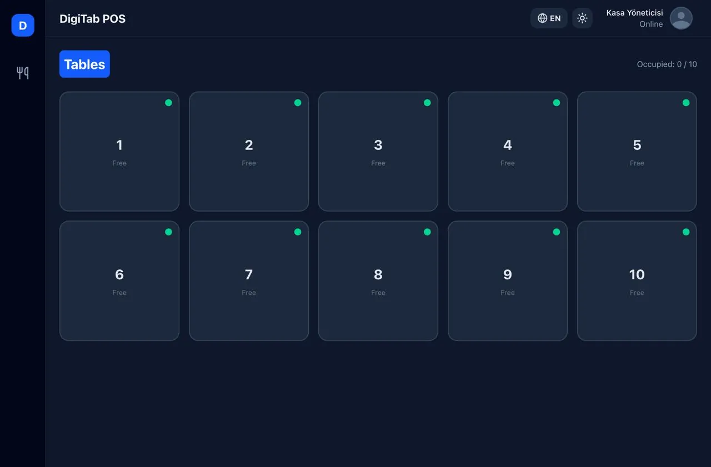

Elektrik-elektronik mühendisliği öğrencisiElectrical & electronics engineering student
Fatih Aksoy
Gömülü sistemler, PCB tasarımı ve otomasyon üzerine çalışıyorum. Kartı tasarlamaktan firmware'ini ve onu kullanan masaüstü arayüzü yazmaya kadar projenin tamamını üstlenmeyi seviyorum.
I work on embedded systems, PCB design and automation. I like owning a project end to end: from designing the board to writing its firmware and the desktop app that drives it.

HakkındaAbout
Merhaba, ben Fatih. Elektrik-elektronik mühendisliği öğrencisiyim. Kendimi en çok gömülü sistemler, PCB tasarımı ve otomasyon alanlarında, gerçek donanım üzerinde çalışarak geliştiriyorum.
Hi, I'm Fatih, an electrical and electronics engineering student. I learn best by working on real hardware, mostly in embedded systems, PCB design and automation.
Son projelerimde bir quadcopter'ın uçuş kartını KiCad'de çizdim, STM32 ile bir robot kolu sürdüm, bir aracın CAN hattını dinleyerek motor devri sinyalini tersine mühendislikle çözdüm ve bunlarla konuşan masaüstü arayüzleri yazdım.
Recently I drew a quadcopter flight board in KiCad, drove a robot arm with an STM32, reverse-engineered a vehicle's engine-speed signal by listening to its CAN bus, and wrote the desktop apps that talk to them.
| OdakFocus | Gömülü yazılım, PCB tasarımı, haberleşme protokolleri, otomasyonEmbedded software, PCB design, communication protocols, automation |
|---|---|
| MCU | STM32, ESP32, AVR (ATmega328P) |
| DonanımHardware | KiCad, şema ve PCB yerleşimischematic and PCB layout |
| YazılımSoftware | C/C++ (PlatformIO, Arduino), Python (PyQt6, python-can), JavaScript (React, Electron, Node.js) |
| ProtokollerProtocols | CAN, UART, I²C, SPI, USB-CDC, ESP-NOW |
ProjelerProjects
-
01
CAN-Bus SnifferCAN-Bus Sniffer
Bir aracın OBD-II soketinden CAN trafiğini dinleyip, üreticiye özel motor devri sinyalini tersine mühendislikle bulan araç seti.
A toolset that listens to a vehicle's CAN traffic through the OBD-II port and reverse-engineers the manufacturer-specific engine RPM signal.
-
02
Yer Kontrol İstasyonuGround Control Station
İHA'lar için masaüstü yer kontrol yazılımı: seri hattan gelen telemetriyi çözer, uçuş göstergelerini çizer ve harita üzerinden görev yükler.
Desktop ground control software for UAVs: decodes telemetry from a serial link, draws flight instruments and uploads missions from a map.
-
03
Robot Kol KontrolcüsüRobot Arm Controller
STM32 Blackpill üzerinde çalışan 6 servolu robot kol firmware'i ve USB üzerinden kontrol eden PyQt6 masaüstü arayüzü.
Firmware for a 6-servo robot arm on an STM32 Blackpill, plus a PyQt6 desktop app that controls it over USB.

-
04
ESP32 QuadcopterESP32 Quadcopter
Gövdesi de PCB olan, ESP32 tabanlı küçük bir quadcopter: şema, kart tasarımı ve PID stabilizasyonlu uçuş yazılımı.
A small ESP32-based quadcopter whose frame is the PCB itself: schematic, board layout and PID-stabilised flight firmware.

-
05
STM32 Uçuş Kontrol KartıSTM32 Flight Controller
STM32 tabanlı, özel tasarım uçuş kontrol kartı ve stabilizasyon yazılımı.
A custom STM32-based flight control board and stabilisation firmware.

-
06
3 Eksenli CNC Freze3-Axis CNC Mill
Mekaniği, kontrol kartı ve yazılımıyla baştan tasarlanmış masaüstü CNC freze.
A desktop CNC mill designed from scratch: mechanics, control board and software.

-
07
DigiTab Adisyon SistemiDigiTab Order Management
Restoran ve kafeler için gerçek zamanlı sipariş, masa ve menü yönetim sistemi.
A real-time order, table and menu management system for restaurants and cafés.

İletişimContact
Staj, proje ya da sadece bir soru için bana e-postayla ulaşabilirsin. Projelerin kaynak kodları GitHub'da.
For internships, projects or just a question, email is the best way to reach me. Source code for the projects is on GitHub.
| E-postaEmail | mf.aksoy34@gmail.com |
|---|---|
| GitHub | FatihAksoyEEE ↗ |
| YouTube | @electronc_workshop ↗ |
| @fatih_aksoy6741 ↗ | |
| CV | FatihAksoy_CV.pdf |